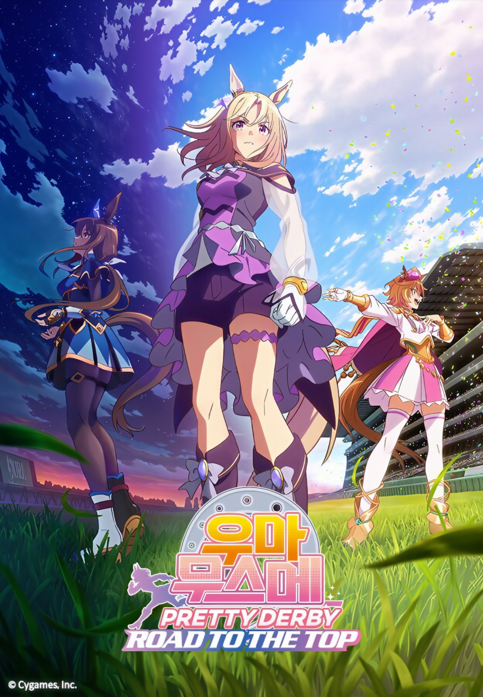
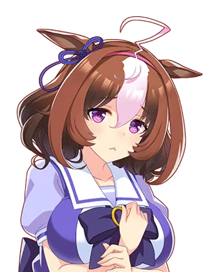
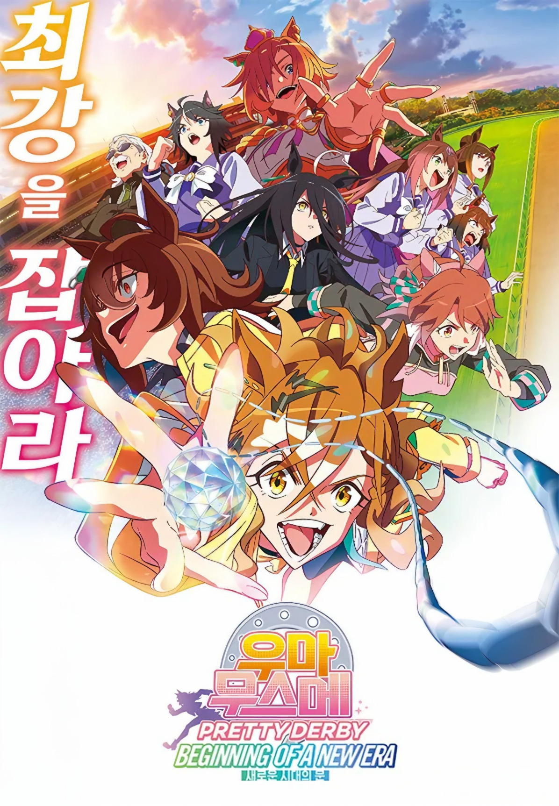
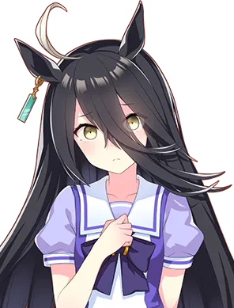
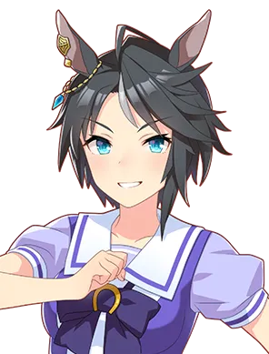

우마무스메 프리티 더비는 실존한 일본 명마들을 모티프로 한 소녀들이 경마 레이스와 아이돌 라이브를 펼치는 미디어 프랜차이즈입니다. 이 페이지는 시리즈를 처음 접하는 분을 위한 스포일러 없는 안내서입니다.
세계관
이 세계에는 말의 이름과 혼을 이어받은 소녀 종족 ‘우마무스메’가 살고 있습니다. 도쿄 소재의 트레센 학원에서 훈련하며, 실제 일본중앙경마회(JRA) 일정을 따르는 ‘트윙클 시리즈’ 레이스에 출전합니다.
사츠키상, 일본 더비, 국화상. 우마무스메가 평생 단 한 번만 도전할 수 있는 세 경주입니다. 두 작품 모두 이 삼관을 중심으로 이야기가 전개됩니다.
레이스가 끝나면 상위 입상자가 관중 앞에서 라이브 무대를 선보입니다. 프랜차이즈를 대표하는 고유한 설정이자, 승리의 기쁨을 나누는 축제 같은 의식입니다.
모든 캐릭터의 이름은 실제 마주로부터 정식 라이선스를 받아 사용합니다. 모색은 머리카락 색이 되고, 마주의 기수복 배색이 레이싱 의상에 반영됩니다.
우마무스메들의 교육·훈련 기관. 세일러복 교복과 빨간 트레이닝 저지가 상징입니다. 각 우마무스메는 담당 트레이너와 팀을 이뤄 레이스를 준비합니다.
두 작품은 각기 다른 세대의 독립된 이야기입니다. 이전 시리즈를 보지 않아도 충분히 즐길 수 있으니, 캐릭터와 분위기만 가볍게 훑어보시면 됩니다.
Uma Musume Pretty Derby: Road to the Top

Synopsis
클래식 삼관에 도전할 기회는 생애 단 한 번. 모두에게 사랑받지만 늘 정상에 한 발 모자라는 나리타 탑 로드, 떠나보낸 자매의 기억을 안고 홀로 달리는 어드마이어 베가, 부상에서 돌아와 자신이 패왕임을 세상에 선언하려는 티엠 오페라 오 — 서로 다른 신념을 가진 세 소녀가 1999년 클래식 시즌에서 격돌한다. ‘정상(Top)’에 가장 가까이 닿는 순간, 그곳에서 마주하게 되는 건 무엇인가.
Characters
나리타 탑 로드
Narita Top Road
주인공 · 만년 ‘조연’ 우등생밝고 성실한 반장 타입. 주변의 응원에 보답하고 싶지만, 정작 본인은 늘 ‘주인공이 아닌 조연’이라는 감각에서 벗어나지 못한다. 베가의 사정을 캐묻지 않으면서도 ‘라이벌로서 네 곁에 있겠다’고 선언하는 사람이며, 오페라 오의 압도적인 존재감에 자극받으며 자기만의 정상을 찾아간다.
Real horse
나리타 탑 로드(1996~2005). 1999 국화상(G1) 우승마. 일본 더비 2착, 사츠키상 3착 등 항상 한 끗 차이로 밀려난 ‘동메달 수집가’였지만, 팬 투표에서는 매년 상위권을 유지한 인기마였다. 국화상 우승 정확히 6년 뒤 심부전으로 세상을 떠났다.
어드마이어 베가
Admire Vega
라이벌 · 밤하늘의 별말수가 적고 타인과의 거리를 두는 고독한 소녀. 떠나보낸 쌍둥이 자매에 대한 죄책감을 안고 홀로 달린다. 탑 로드가 다가와도 쉽게 마음을 열지 못하고, 오페라 오의 눈부신 빛 아래에서 더욱 자신의 어둠 속으로 침잠한다. 가족이 매년 생일 케이크를 두 개씩 준비한다는 설정이 그 상실의 깊이를 암시한다.
Real horse
어드마이어 베가(1996~2004). 명종마 선데이 사일런스 산구, 어머니는 챔피언마 베가. 1999 일본 더비(G1) 우승. 실제로 쌍태 임신에서 살아남은 말로, 캐릭터의 ‘잃어버린 자매’ 설정이 여기서 비롯되었다. 2000년 부상으로 은퇴한 뒤 8세에 요절.
티엠 오페라 오
T.M. Opera O
라이벌 · 자칭 패왕‘세기말 패왕’을 자칭하는 나르시시스트. 특유의 과장된 연기 톤과 웃음소리로 어디서나 자기애를 과시한다. 이미 달리는 것의 의미를 누구보다 잘 이해하고 있어, 등대처럼 탑 로드와 베가를 이끄는 존재이기도 하다. 두 사람이 흔들릴 때 직접 나서기보다는 자기 길에 대한 확신을 보여주는 것으로 용기를 불어넣는 타입이다.
Real horse
T.M. 오페라 오(1996~2018). 2000년 한 해 8전 전승에 G1 5승 — 천황상(봄)·다카라즈카 기념·천황상(가을)·재팬컵·아리마 기념을 석권하며 일본 경마 사상 첫 ‘가을 삼관’을 달성. 통산 획득상금 세계 기록(18억 3,500만 엔)을 세운 말로, ‘세기말 패왕’이라는 별명이 캐릭터에 직접 반영되어 있다.
☞ 티엠 오페라 오는 『새로운 시대의 문』에도 등장한다. RTTT 이후 2000년에 전무후무한 전승 기록을 세우며 ‘세기말 패왕’의 이름값을 완성한 그녀는, 2001년을 배경으로 한 새로운 시대의 문에서 신세대가 넘어서야 할 전설로서 존재감을 드러낸다.
Supporting

메이쇼 도토
Meisho Doto
조연 · 오페라 오의 그림자소심하고 덤벙거리지만 누구보다 끈기 있는 소녀. 티엠 오페라 오의 가장 가까이에서 그녀를 응원하고 지켜보는 존재다. 패왕의 빛 아래에서 늘 2등이지만, 그 자리를 떠나지 않는다.
Real horse
메이쇼 도토(1996~). 혈통도 수수하고 성장도 느린 만성형 말이었으나, G1에서 다섯 번 연속 오페라 오에게 2착을 기록한 비운의 ‘콩라인’. 2001 다카라즈카 기념에서 마침내 첫 G1 우승을 거머쥐었다.
Beginning of a New Era

Synopsis
뒷골목 프리스타일 레이스의 무법자 정글 포켓은 전설의 우마무스메 후지 키세키의 경주를 보고 강렬한 충격을 받는다. 트레센 학원에 입학한 그녀를 기다리는 건, 속도의 한계를 실험하는 매드 사이언티스트 아그네스 타키온, 자기에게만 보이는 유령 같은 ‘친구’를 쫓는 맨하탄 카페, 재능의 벽 앞에서도 멈추지 않는 노력파 단츠 플레임. 2001년 ‘최강 세대’의 클래식 시즌, 가장 강한 자의 자리를 향한 네 소녀의 질주가 시작된다.
Characters
정글 포켓
Jungle Pocket
주인공 · ‘최강’을 향해뒷골목 프리스타일 레이서 출신의 쾌활하고 거침없는 소녀. 후지 키세키의 경주에 충격을 받고 트레센 학원에 들어오면서, 같은 타나베 트레이너 밑에서 맨하탄 카페와 한 팀이 된다. 타키온의 날카로운 시선에 본능적으로 반응하고, 단츠 플레임의 성실함에 자극받는 등 동기들과 부딪치며 성장하는 캐릭터다.
Real horse
정글 포켓(1998~2021). 2001 일본 더비(G1) 및 재팬컵(G1) 우승마. 재팬컵에서도 우승하며 세대교체를 알렸고, 2001 올해의 말로 선정되었다. 아버지 말은 개선문상 우승마 토니 빈. 더비 우승 직후의 우렁찬 울음소리가 유명하다.
아그네스 타키온
Agnes Tachyon
라이벌 · 매드 사이언티스트레이스를 ‘실험’으로, 다른 우마무스메를 ‘피험체’로 보는 천재. ‘속도의 바깥’에 무엇이 있는지를 탐구하며, 특히 정글 포켓의 다듬어지지 않은 원석 같은 잠재력에 실험자로서 강한 관심을 보인다. 흰 실험복에 시험관 벨트, 눈동자의 격자 패턴 등 이질적인 외형이 그 내면의 집요함을 드러낸다.
Real horse
아그네스 타키온(1998~2009). 데뷔 후 4전 4승 무패. 2001 사츠키상(G1) 우승 직후 굴건염으로 전격 은퇴하면서 ‘환상의 삼관마’라 불리게 되었다. 이름은 빛보다 빠른 가설 입자 ‘타키온’에서 유래. 2008년에는 그해 가장 뛰어난 자녀를 배출한 아버지 말로 선정되기도 했으나, 11세에 갑작스럽게 세상을 떠났다.

맨하탄 카페
Manhattan Cafe
라이벌 · 유령을 쫓는 소녀자신에게만 보이는 그림자 같은 ‘친구’를 끊임없이 쫓는 수수께끼의 소녀. 정글 포켓과 같은 타나베 트레이너 소속으로, 성격은 정반대지만 같은 팀에서 서로를 의식하게 된다. 시적이고 몽환적인 말투, 으스스한 분위기와 달리 본성은 다정하고 온화하다. 커피를 좋아하는데 위가 약해 천천히 마시는 것이 습관.
Real horse
맨하탄 카페(1998~2015). 선데이 사일런스 산구의 칠흑 모색 명마. 국화상·아리마 기념·천황상(봄) G1 3승을 거두며 ‘잔디 위의 마천루’라는 별명을 얻었다. 은퇴 후 아버지 말로서도 크게 성공하며 많은 명마를 배출했다.
단츠 플레임
Dantsu Flame
라이벌 · 멈추지 않는 노력파착하고 성실하지만 자신감은 부족한 소녀. 동기들을 진심으로 좋아하면서도, 정글 포켓의 폭발력이나 타키온의 천재성 앞에서 열등감과 호승심 사이를 오간다. ‘영원히 달리고 싶다’는 소망 하나로 버티는 캐릭터이며, 짧지만 강렬한 대사들이 이 인물의 진가를 보여준다.
Real horse
단츠 플레임. 사츠키상 2착(타키온에 밀림), 일본 더비 2착(정글 포켓에 밀림)으로 ‘최강 세대의 만년 2등’. 유일한 G1 우승은 동기들이 빠진 뒤에 찾아온 2002 다카라즈카 기념이었다.
Supporting

후지 키세키
Fuji Kiseki
조연 · 정글 포켓의 원점정글 포켓이 트레센 학원에 들어오게 된 결정적 계기. 그녀의 경주를 목격한 충격이 이야기의 시작점이다. 정글 포켓과 같은 타나베 트레이너 소속의 선배이며, 자신은 부상으로 클래식 삼관에 도전조차 못 했기에 지금 달리는 후배들의 모습을 누구보다 깊이 이해하는 인물이다.
Real horse
후지 키세키(1992~2015). 1994 사츠키상(G1) 우승마이자 무패의 삼관마 후보였으나, 클래식 도중 굴건염으로 전격 은퇴. 이후 아버지 말로서 대성공을 거두었으며, 자녀 중에는 이 작품의 주인공 정글 포켓이 포함되어 있다.